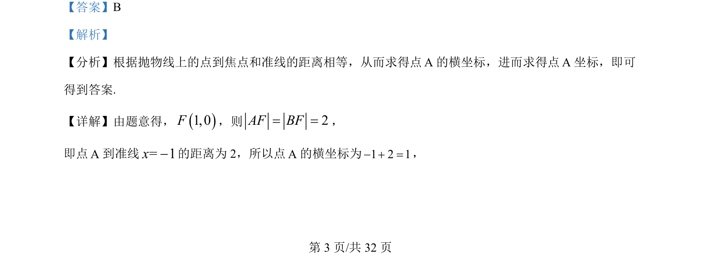
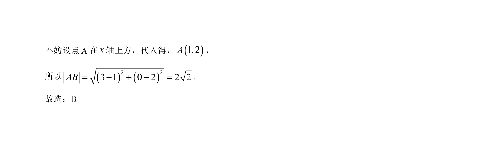

考点：抛物线定义 两点间距离公式
根据抛物线定义求点坐标，再利用两点距离公式求弦长。


📄 原 PDF 第 3 页：
素材/真题/吉林/2008-2024·（吉林）数学高考真题/2022年高考数学试卷（理）（全国乙卷）（解析卷）.pdf
【答案】B 【解析】 【分析】根据抛物线上的点到焦点和准线的距离相等，从而求得点A的横坐标，进而求得点A坐标，即可 得到答案. 【详解】由题意得，()1,0F，则 2AF BF= =， 即点A到准线= 1x-的距离为 2，所以点A的横坐标为1 2 1- + =， 为